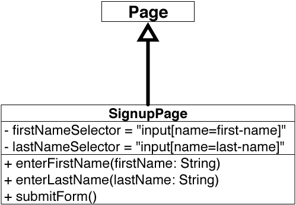
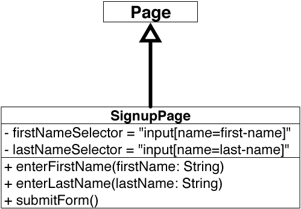

Selenium WebDriver Best Practices
Ben Burton
@bjburton
WebDriver is part of Selenium 2 that allows for native API interaction with a variety of different browsers.
Mike Cohn's Testing Pyramid Succeeding with Agile: Software Development Using Scrum, Mike Cohn, Addison-Wesley Professional, 2009
suggests that you should have a large, strong basis of unit tests, a number of service level integration tests, and a small number of UI tests.
I call these "functional" tests in the context of a web application, because they test a site's overall functionality.
#sign-out#log-out
The primary example that comes to mind for me that exemplifies functional tests brittleness is that they're easily broken by minor changes in
document structure. Because WebDriver uses XPaths, CSS selectors, and page identifiers to locate elements on a page, changes to these attributes
in the document can affect whether the page elements can be successfully found and subsequently interacted with in a test. In the example above,
we can imagine that a seemingly innocuous change of a link id from "sign-out" to "log-out" could cause a test to fail if it's dependent on using
this document locator.
WebDriver tests emulate user behavior by simulating human interactions with a webpage. Because these interactions aren't instantaneous, and often
rely on things like AJAX responses, artificial delays, or page animations for user experience, functional tests can take a substantially longer
amount of time than those at other tiers in the testing pyramid.
If you're testing your code responsibly, you should already cover many aspects of functionality at lower levels of the testing pyramid.
This means that you probably already cover a large portion of the code that gets executed in the high level functional tests. There's
little need to want to retest the same stuff functionally at a high level, especially because of the other setbacks.
They're not all bad! Functional tests are beneficial because they provide early indications of something wrong with your overall application
that may not be evident at other levels of testing. For example, you might encounter an error that only occurs with specific versions of browsers.
Such a bug may be undetectable at the level of integration tests, so having a high-level functional test can allow you to test a wider variety of
use cases that you may previously have only been able to reproduce via manual testing.
I'd recommend that you only want to use functional tests when you want to make sure that something mission critical works.
Let's say you're planning on testing your social networking site for foosball enthusiasts. If you're not discerning in your functional testing, you
might consider writing tests for both item 1 (a video pop-up) and item 2 a signup form. It seems obvious that you'd want to test the sign up form.
After all, if users can't sign up for your service that's a pretty big issue. If this is the case, you'll want to be aware of it immediately.
Functional tests are your first line of defense for difficult to detect errors that shouldn't make it past your staging environment. On the other
hand, what about the promotional video? It's definitely a bad user experience if the video doesn't work correctly, but taking the time to test all
these sorts of issues means that you might spend a great deal of time wading through false positives due to timing and document structure issues, and
miss or neglect issues that are much more severe (such as problems with the signup module).
Shift focus to walking through the code of Foosebook demo test (found here).
 

The Page Object design pattern models the elements of a page as an object. It takes the structure of the HTML page in the image on the left, and
transforms it into an object represented by the UML diagram on the right. If the structure of the document changes, you only need to update
your references in one place. It also keeps the details of a page encapsulated so that they don't leak into the context of the test. In the example
code you'll note that the test class contained both specific details about the page that was being tested, as well as the details about *how* the
page was to be tested. In order to separate these concerns, we employ the page object pattern.
Here I'll do a bunch of code refactoring in Eclipse.
Feature: Foosbook Signup
Scenario: A complete signup should
submit successfully
Given a user is on the
signup page
When user enters complete
form data
And user submits the form
Then no error message
is displayed
TODO: Notes about BDD.
Here I'll walk through running ScalaTest example.
Testing copy is even more brittle than testing document paths. TODO: Write more here.